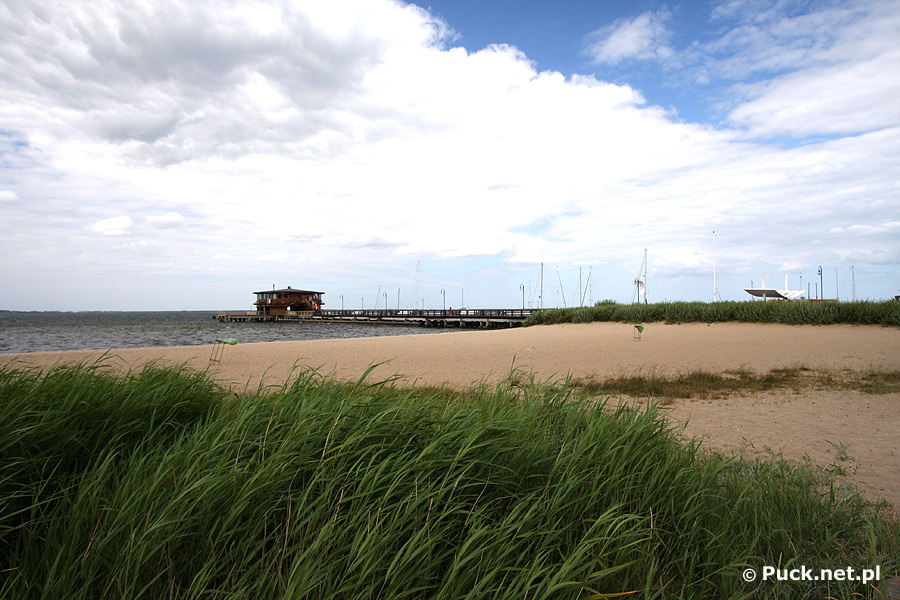

Dane o powiecie
| Siedziba | Puck |
| Powierzchnia | 572 km² |
| Populacja | 84 687 |
Dane kontaktowe starostwa powiatowego
| Telefon | +48 586734191 |
| Adres | ul. Orzeszkowej 5, 84-100 Puck |
| Strona | powiat.puck.pl |
Atrakcje turystyczne
Latarnia Morska Hel

Latarnia Morska Helu to ośmiokątna wieża z czerwonobrunatnej licowanej cegły, zwężająca się ku górze, zakończona galerią pod stożkowym dachem, na którym znajduje się jedna z helskich anten radiowych. Latarnia ma 41,5 m wysokości, a jej światło (i taras widokowy) umieszczone na wysokości 39 m widać nawet z odległości 18 Mm (ok. 36 km). Źródłem światła jest 1000 W żarówka, która w przypadku przepalenia się wykonuje automatycznie obrót o 45 st., a na jej miejsce ustawia się żarówka zapasowa.
Źródło: gohel.plMolo w Pucku
 Zdjęcie ze strony puck.net.plPuck to niewielkie miasteczko nadmorskie, położone na tzw. Kępie Puckiej. Malownicze położenie i nastawienie na turystykę to główne atuty Pucka. Oprócz zabytków miasteczka, bardzo ciekawe jest piękne puckie molo - całe drewniane, szerokie, ze specjalnymi podestami na ławeczki. W okolicy mola znajduje się malowniczy port żaglówek i motorówek, które dodają uroku temu miejscu.
Warto wspomnieć, że na molo w Pucku wchodzi się z szerokiego deptaka, który wraz ze ścieżką rowerową ciągnie się wzdłuż nabrzeża. Na molo można również wejść prosto z parku miejskiego. Pośrodku mola stoi drewniana tawerna, urządzona w stylu kapitańskiej kajuty. Ciekawe miejsce.
Źródło: polskieszlaki.plGroty Mechowskie
Groty Mechowskie we wsi Mechowo koło Pucka to oryginalny, piękny pomnik przyrody nieożywionej, bardzo ciekawy geologicznie. To jedyna w Polsce i Europie osobliwość geologiczna na terenach nizinnych.
Groty Mechowskie powstały na skutek wypłukiwania piasku ze skał osadowych scementowanych przez związki wapnia. Wejście, a właściwie kilka wejść do groty tworzą filary przypominające olbrzymie stalagnaty o fantazyjnych, wręcz baśniowych kształtach, zwane też skalną balustradą. Podtrzymują one strop groty, zwanej małą jaskinią. To najkrótsza podziemna trasa turystyczna w Polsce!
Źródło: polskieszlaki.pl